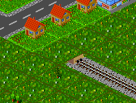
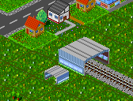

Bahndepots können nur auf Gleisenden gebaut werden. D.h. um ein Bahndepot zu bauen, sucht man zuerst ein freies Gleisende, so wie im linken Bild dargestellt. Meist ist es sinnvoll für ein Bahndepot ein neues Stück Schiene zu bauen. Dann klickt man das freie Ende mit dem Bahndepotbauwerkzeug an, und schon wird das Bahndepot automatisch gebaut. Das Resultat sollte jetzt aussehen wie im rechten Bild dargestellt.
|  |  |
von Hansjörg Malthaner
EMail: hansjoerg.malthaner@gmx.net